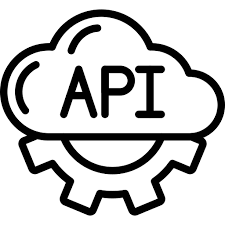
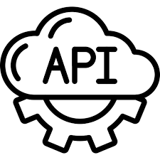

O projeto tem o objetivo de utilizar dados de APIS públicas, processar elas e transformar em informações uteis para mostrar em gráficos do Google Charts
Usar a aprendizagem de Google Charts em conjunto com as informações de API e interagir com os dois usando JavaScript em um HTML.


 
